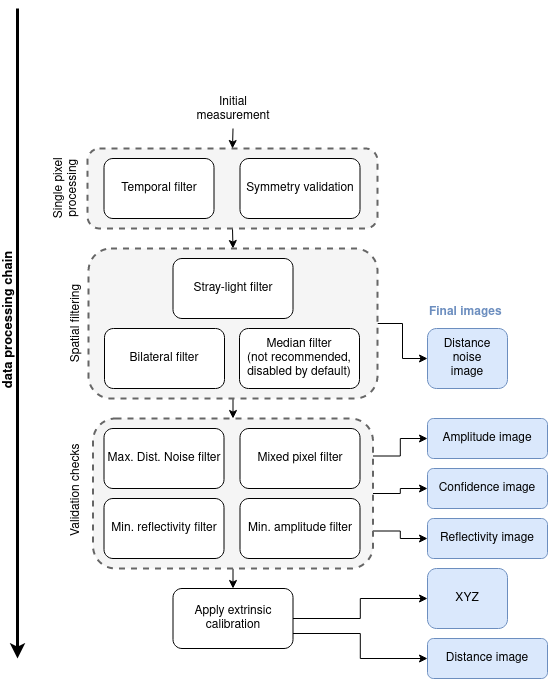

Processing parameters
The O3R provides several filters to handle specific ToF artifacts. The diagram below shows the filtering process applied to the ToF data to produce distance measurements.

Parameter reference
Parameter types and defaults can depend on the firmware version. See the processing parameter reference for schema-retrieval examples and the parameter table. The filtering process overview provides additional context.
Available filters
Maximum distance noise — invalidates pixels whose estimated distance noise exceeds a threshold.
Minimum amplitude — invalidates pixels with insufficient received amplitude.
Minimum reflectivity — invalidates pixels below a reflectivity threshold.
Adaptive noise bilateral filter — reduces distance noise while preserving object edges.
Median filter — filters pixels using their spatial neighborhood.
Temporal filter — reduces distance noise using information from multiple frames.
Mixed pixel filter — removes pixels affected by foreground and background measurements at object edges.
Symmetry threshold — controls the permitted asymmetry in the received signal.
CUDA processing
See CUDA point cloud processing for the VPU processing configuration.